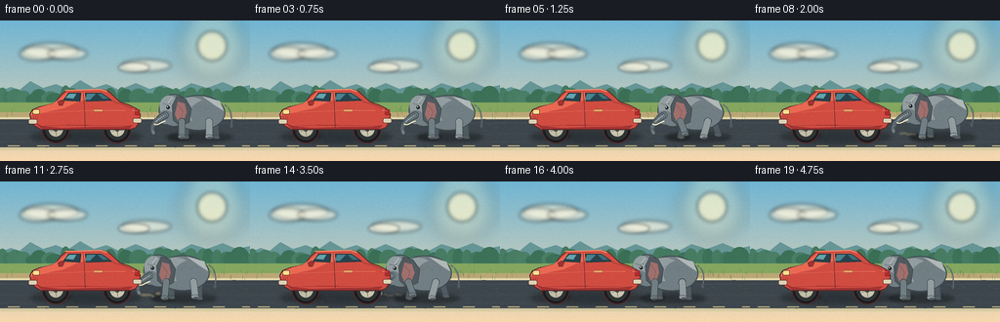
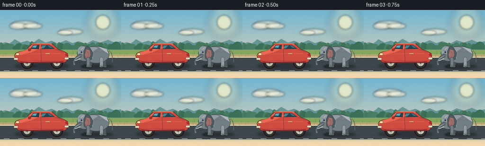

CODING AGENTS AS PIXEL WORLD MODELS
traex/DeepSeek-V4.1-Flash · dynamic_spatial_relationship_0064
点击播放 · 原生 RGB 像素
逐轮保存的候选
回放视频、检查图与代码变化。
每份候选均可单独播放。实际图片检查记录在下方工具轨迹中。
候选 01播放与检查图
点击播放 · 原生 RGB 像素


展开代码变化
--- 上一保存版本
+++ 本次保存版本
@@ -0,0 +1,619 @@
+from __future__ import annotations
+
+import math
+from pathlib import Path
+
+import numpy as np
+from PIL import Image, ImageDraw, ImageFilter
+
+import artifact_io
+
+
+WIDTH = 256
+HEIGHT = 144
+FRAMES = 20
+FPS = 4.0
+SCALE = 4
+SS_W = WIDTH * SCALE
+SS_H = HEIGHT * SCALE
+
+Color = tuple[int, int, int] | tuple[int, int, int, int]
+
+
+def sx(value: float) -> int:
+ return int(round(value * SCALE))
+
+
+def point(x: float, y: float) -> tuple[int, int]:
+ return sx(x), sx(y)
+
+
+def points(values: list[tuple[float, float]]) -> list[tuple[int, int]]:
+ return [point(x, y) for x, y in values]
+
+
+def bounds(cx: float, cy: float, rx: float, ry: float) -> tuple[int, int, int, int]:
+ return sx(cx - rx), sx(cy - ry), sx(cx + rx), sx(cy + ry)
+
+
+def polygon(
+ draw: ImageDraw.ImageDraw,
+ values: list[tuple[float, float]],
+ fill: Color,
+ outline: Color | None = None,
+ width: float = 1.0,
+) -> None:
+ draw.polygon(points(values), fill=fill, outline=outline, width=max(1, sx(width)))
+
+
+def ellipse(
+ draw: ImageDraw.ImageDraw,
+ cx: float,
+ cy: float,
+ rx: float,
+ ry: float,
+ fill: Color,
+ outline: Color | None = None,
+ width: float = 1.0,
+) -> None:
+ draw.ellipse(bounds(cx, cy, rx, ry), fill=fill, outline=outline, width=max(1, sx(width)))
+
+
+def rounded_rect(
+ draw: ImageDraw.ImageDraw,
+ x0: float,
+ y0: float,
+ x1: float,
+ y1: float,
+ radius: float,
+ fill: Color,
+ outline: Color | None = None,
+ width: float = 1.0,
+) -> None:
+ draw.rounded_rectangle(
+ (sx(x0), sx(y0), sx(x1), sx(y1)),
+ radius=sx(radius),
+ fill=fill,
+ outline=outline,
+ width=max(1, sx(width)),
+ )
+
+
+def stroke(
+ draw: ImageDraw.ImageDraw,
+ values: list[tuple[float, float]],
+ fill: Color,
+ width: float,
+ rounded: bool = True,
+) -> None:
+ line_width = max(1, sx(width))
+ draw.line(points(values), fill=fill, width=line_width, joint="curve" if rounded else None)
+ if rounded:
+ radius = width / 2
+ for x, y in (values[0], values[-1]):
+ ellipse(draw, x, y, radius, radius, fill)
+
+
+def cubic_points(
+ p0: tuple[float, float],
+ p1: tuple[float, float],
+ p2: tuple[float, float],
+ p3: tuple[float, float],
+ count: int = 20,
+) -> list[tuple[float, float]]:
+ result = []
+ for index in range(count + 1):
+ t = index / count
+ u = 1.0 - t
+ x = u**3 * p0[0] + 3 * u * u * t * p1[0] + 3 * u * t * t * p2[0] + t**3 * p3[0]
+ y = u**3 * p0[1] + 3 * u * u * t * p1[1] + 3 * u * t * t * p2[1] + t**3 * p3[1]
+ result.append((x, y))
+ return result
+
+
+def alpha_layer(callback) -> Image.Image:
+ layer = Image.new("RGBA", (SS_W, SS_H), (0, 0, 0, 0))
+ callback(ImageDraw.Draw(layer))
+ return layer
+
+
+def soft_ellipse(
+ base: Image.Image,
+ cx: float,
+ cy: float,
+ rx: float,
+ ry: float,
+ color: tuple[int, int, int, int],
+ blur: float,
+) -> Image.Image:
+ layer = alpha_layer(lambda draw: ellipse(draw, cx, cy, rx, ry, color))
+ layer = layer.filter(ImageFilter.GaussianBlur(sx(blur)))
+ return Image.alpha_composite(base, layer)
+
+
+def build_background() -> Image.Image:
+ yy = np.linspace(0.0, 1.0, SS_H, dtype=np.float32)[:, None, None]
+ top = np.array([112, 181, 211], dtype=np.float32)[None, None, :]
+ bottom = np.array([247, 216, 174], dtype=np.float32)[None, None, :]
+ sky = top * (1.0 - yy) + bottom * yy
+ image = np.repeat(sky, SS_W, axis=1).astype(np.uint8)
+ base = Image.fromarray(image, "RGB").convert("RGBA")
+ draw = ImageDraw.Draw(base)
+
+ # Soft sun and warm atmosphere in the upper-right corner.
+ base = soft_ellipse(base, 217, 26, 34, 34, (255, 238, 181, 58), 8.0)
+ base = soft_ellipse(base, 217, 26, 15, 15, (255, 247, 205, 165), 2.0)
+ draw = ImageDraw.Draw(base)
+
+ cloud_color = (249, 243, 220, 152)
+ base = soft_ellipse(base, 52, 31, 28, 8, cloud_color, 2.0)
+ base = soft_ellipse(base, 38, 34, 18, 7, cloud_color, 2.0)
+ base = soft_ellipse(base, 69, 34, 20, 6, cloud_color, 2.0)
+ base = soft_ellipse(base, 150, 46, 25, 6, cloud_color, 2.0)
+ base = soft_ellipse(base, 137, 48, 16, 5, cloud_color, 1.5)
+ draw = ImageDraw.Draw(base)
+
+ # Layered distant hills.
+ far_hills = [
+ (0, 79), (0, 72), (11, 68), (20, 71), (31, 62), (44, 69),
+ (57, 65), (69, 70), (82, 61), (96, 69), (109, 65), (122, 71),
+ (139, 64), (153, 70), (166, 66), (181, 72), (196, 64), (212, 69),
+ (228, 63), (242, 69), (256, 66), (256, 81),
+ ]
+ polygon(draw, far_hills, (102, 149, 150))
+ near_hills = [
+ (0, 84), (0, 76), (14, 72), (25, 78), (39, 73), (53, 80),
+ (66, 75), (79, 81), (91, 75), (105, 81), (119, 77), (135, 82),
+ (149, 76), (164, 81), (181, 75), (195, 80), (211, 76), (228, 82),
+ (243, 77), (256, 80), (256, 89),
+ ]
+ polygon(draw, near_hills, (107, 162, 124))
+
+ # Distant trees give the horizon depth without competing with the actors.
+ rng = np.random.default_rng(41)
+ for index in range(34):
+ x = index * 8.2 + rng.uniform(-2.5, 2.5)
+ height = rng.uniform(8, 17)
+ width = rng.uniform(5, 10)
+ shade = int(rng.uniform(-10, 9))
+ color = (66 + shade, 119 + shade, 94 + shade)
+ ellipse(draw, x, 84 - height * 0.38, width, height * 0.65, color)
+ for index in range(20):
+ x = index * 14 + 5
+ ellipse(draw, x, 89, 10, 5, (91, 137, 91))
+
+ # Meadow and a broad roadside.
+ draw.rectangle((0, sx(84), SS_W, sx(101)), fill=(132, 166, 95))
+ draw.rectangle((0, sx(94), SS_W, sx(102)), fill=(186, 167, 117))
+ draw.rectangle((0, sx(99), SS_W, sx(133)), fill=(61, 70, 76))
+ draw.rectangle((0, sx(99), SS_W, sx(101)), fill=(225, 213, 171))
+ draw.rectangle((0, sx(130), SS_W, sx(133)), fill=(217, 204, 163))
+
+ # Subtle asphalt bands, cracks, and small stones.
+ for y, color in ((105, (72, 81, 87)), (116, (68, 77, 83)), (124, (69, 77, 82))):
+ draw.line((0, sx(y), SS_W, sx(y)), fill=color, width=sx(0.45))
+ for _ in range(95):
+ x = rng.uniform(0, WIDTH)
+ y = rng.uniform(101, 130)
+ length = rng.uniform(1.0, 5.0)
+ tone = int(rng.uniform(66, 88))
+ draw.line(
+ (sx(x), sx(y), sx(x + length), sx(y + rng.uniform(-0.4, 0.4))),
+ fill=(tone, tone + 7, tone + 10),
+ width=max(1, sx(0.28)),
+ )
+ for x in range(8, WIDTH, 30):
+ draw.rectangle((sx(x), sx(128), sx(x + 12), sx(128.7)), fill=(211, 192, 139))
+
+ # Sparse grass along both shoulders.
+ for _ in range(70):
+ x = rng.uniform(0, WIDTH)
+ if 24 < x < 150:
+ continue
+ y = rng.uniform(92, 101)
+ blade = rng.uniform(2, 5)
+ color = (70 + int(rng.uniform(0, 20)), 116 + int(rng.uniform(0, 20)), 66)
+ draw.line((sx(x), sx(y), sx(x + rng.uniform(-1.2, 1.2)), sx(y - blade)), fill=color, width=sx(0.35))
+
+ return base
+
+
+def draw_car_shadow(image: Image.Image) -> Image.Image:
+ image = soft_ellipse(image, 88, 119, 57, 6.5, (25, 30, 33, 120), 2.4)
+ return soft_ellipse(image, 61, 118, 12, 2.8, (19, 23, 25, 105), 1.3)
+
+
+def draw_car(image: Image.Image) -> Image.Image:
+ draw = ImageDraw.Draw(image)
+ body = (208, 76, 65, 255)
+ body_light = (234, 104, 82, 255)
+ body_shadow = (161, 51, 50, 255)
+ outline = (86, 38, 39, 255)
+ glass = (38, 68, 78, 255)
+ glass_light = (100, 164, 173, 255)
+
+ # Wheels first; the body covers their upper halves.
+ for wheel_x, hub_color in ((57, (194, 190, 167)), (120, (202, 198, 175))):
+ ellipse(draw, wheel_x, 111.5, 14.2, 14.2, (24, 28, 30, 255), outline, 1.1)
+ ellipse(draw, wheel_x, 111.5, 11.0, 11.0, (47, 51, 52, 255))
+ ellipse(draw, wheel_x, 111.5, 7.2, 7.2, hub_color)
+ ellipse(draw, wheel_x, 111.5, 2.3, 2.3, (70, 74, 70, 255))
+ for spoke in range(5):
+ angle = spoke * (2 * math.pi / 5) + 0.25
+ draw.line(
+ (
+ sx(wheel_x + math.cos(angle) * 2.5),
+ sx(111.5 + math.sin(angle) * 2.5),
+ sx(wheel_x + math.cos(angle) * 6.2),
+ sx(111.5 + math.sin(angle) * 6.2),
+ ),
+ fill=(126, 126, 115, 255),
+ width=sx(0.8),
+ )
+
+ car_shape = [
+ (31, 101), (30, 96), (33, 91), (40, 88), (49, 86), (56, 84),
+ (62, 76), (68, 71), (104, 70), (111, 72), (123, 83), (132, 86),
+ (140, 90), (144, 96), (143, 104), (139, 110), (133, 112),
+ (42, 112), (35, 108),
+ ]
+ polygon(draw, car_shape, body, outline, 1.1)
+
+ # Upper-body highlight and lower shadow follow the silhouette.
+ polygon(
+ draw,
+ [(35, 91), (43, 88), (54, 85), (61, 80), (68, 74), (104, 73),
+ (108, 77), (91, 80), (78, 84), (65, 90), (50, 93), (38, 96)],
+ body_light,
+ )
+ polygon(
+ draw,
+ [(35, 104), (43, 108), (63, 110), (91, 109), (123, 109), (136, 107),
+ (132, 111), (43, 111)],
+ body_shadow,
+ )
+
+ # Windows and bright reflected sky.
+ front_window = [(64, 82), (70, 74), (83, 74), (82, 83)]
+ rear_window = [(87, 74), (104, 74), (115, 82), (88, 83)]
+ polygon(draw, front_window, glass, (26, 47, 53, 255), 0.8)
+ polygon(draw, rear_window, glass, (26, 47, 53, 255), 0.8)
+ polygon(draw, [(67, 79), (71, 75), (78, 75), (75, 80)], glass_light)
+ polygon(draw, [(89, 75), (98, 75), (92, 81), (87, 81)], (75, 130, 142, 255))
+ polygon(draw, [(100, 75), (104, 75), (111, 80), (105, 80)], (62, 112, 124, 255))
+
+ # Roof lip, pillars, door, handle, mirror, and panel seams.
+ stroke(draw, [(67, 71.5), (103, 70.5), (109, 72.5)], (247, 143, 103, 255), 1.2)
+ stroke(draw, [(85, 74), (86, 84), (87, 109)], outline, 0.55)
+ stroke(draw, [(116, 83), (126, 86), (135, 90)], outline, 0.55)
+ rounded_rect(draw, 96, 91, 105, 93.2, 0.8, (234, 188, 112, 255), outline, 0.35)
+ polygon(draw, [(59, 83), (63, 81), (66, 83), (64, 87), (60, 87)], body_shadow, outline, 0.45)
+
+ # Bumpers, lamps, grille, and the side crease.
+ rounded_rect(draw, 29, 101, 38, 106, 1.8, (218, 211, 181, 255), outline, 0.55)
+ rounded_rect(draw, 136, 100, 145, 105, 1.8, (219, 212, 181, 255), outline, 0.55)
+ rounded_rect(draw, 33.5, 91, 40.5, 96, 1.2, (255, 225, 137, 255), outline, 0.45)
+ rounded_rect(draw, 138, 91, 143, 97, 1.0, (177, 42, 43, 255), outline, 0.35)
+ for x in (34.5, 36.5, 38.5):
+ draw.line((sx(x), sx(98), sx(x), sx(101)), fill=(107, 46, 42, 255), width=sx(0.35))
+ stroke(draw, [(42, 94), (70, 93), (94, 92), (128, 92)], (235, 127, 92, 255), 0.55)
+ stroke(draw, [(42, 108), (68, 107), (91, 107), (132, 108)], (126, 40, 41, 255), 0.55)
+
+ # Tiny chrome glints make the small-scale car feel polished.
+ stroke(draw, [(32, 97), (32.5, 94.5), (35, 92)], (255, 193, 158, 255), 0.5)
+ stroke(draw, [(136, 92), (140, 92.5)], (255, 190, 165, 255), 0.45)
+ return image
+
+
+def draw_elephant_shadow(image: Image.Image, cx: float, cy: float) -> Image.Image:
+ image = soft_ellipse(image, cx + 3, cy + 0.8, 34, 4.8, (24, 28, 28, 128), 2.1)
+ image = soft_ellipse(image, cx - 17, cy + 0.5, 12, 3.2, (26, 29, 27, 105), 1.2)
+ return image
+
+
+def leg(
+ draw: ImageDraw.ImageDraw,
+ hip_x: float,
+ hip_y: float,
+ foot_x: float,
+ foot_y: float,
+ width: float,
+ fill: Color,
+ outline: Color,
+ toe_color: Color,
+) -> None:
+ stroke(draw, [(hip_x, hip_y), (foot_x, foot_y - 1.2)], outline, width + 1.2)
+ stroke(draw, [(hip_x, hip_y), (foot_x, foot_y - 1.2)], fill, width)
+ ellipse(draw, foot_x, foot_y, width * 0.64, 2.25, fill, outline, 0.55)
+ ellipse(draw, foot_x + 1.2, foot_y + 1.05, width * 0.45, 1.0, toe_color)
+
+
+def draw_elephant(image: Image.Image, cx: float, cy: float, phase: float, moving: bool) -> Image.Image:
+ draw = ImageDraw.Draw(image)
+ dark = (79, 91, 97, 255)
+ mid = (113, 126, 132, 255)
+ light = (146, 157, 160, 255)
+ highlight = (176, 184, 184, 255)
+ outline = (62, 72, 77, 255)
+ ear_dark = (79, 89, 94, 255)
+ ear_inner = (159, 111, 108, 255)
+ toe = (86, 93, 94, 255)
+
+ gait = math.sin(phase) if moving else 0.0
+ double_gait = math.sin(phase * 2.0) if moving else 0.0
+ bob = abs(double_gait) * 1.05 if moving else 0.0
+ body_x = cx + 2
+ body_y = 94.5 - bob
+ head_x = cx - 23
+ head_y = body_y - 2.5 + (0.5 * math.sin(phase + 0.8) if moving else 0)
+
+ # Tail behind the body.
+ tail_swing = math.sin(phase + 0.4) * 2.0 if moving else 0.8
+ tail = cubic_points(
+ (body_x + 27, body_y - 8),
+ (body_x + 33, body_y - 5),
+ (body_x + 35 + tail_swing * 0.35, body_y + 5),
+ (body_x + 33 + tail_swing, body_y + 12),
+ 10,
+ )
+ stroke(draw, tail, outline, 1.15)
+ stroke(draw, tail, mid, 0.75)
+ ellipse(draw, tail[-1][0], tail[-1][1] + 1.2, 1.4, 2.3, dark)
+
+ # Far-side legs, deliberately darker for depth.
+ far_lift_a = max(0.0, -gait) * 2.4
+ far_lift_b = max(0.0, gait) * 2.4
+ leg(
+ draw,
+ body_x - 12,
+ body_y + 8,
+ body_x - 13 - gait * 3.7,
+ cy - far_lift_a,
+ 5.3,
+ dark,
+ outline,
+ toe,
+ )
+ leg(
+ draw,
+ body_x + 17,
+ body_y + 8,
+ body_x + 18 + gait * 3.3,
+ cy - far_lift_b,
+ 5.5,
+ dark,
+ outline,
+ toe,
+ )
+
+ # Barrel-shaped torso and broad shoulders.
+ ellipse(draw, body_x, body_y, 27.5, 18.2, mid, outline, 1.0)
+ ellipse(draw, body_x - 8, body_y - 4, 17, 12, light)
+ ellipse(draw, body_x + 8, body_y + 1, 16, 14, mid)
+ polygon(
+ draw,
+ [(body_x + 4, body_y - 17), (body_x + 22, body_y - 12),
+ (body_x + 26, body_y - 2), (body_x + 18, body_y - 7)],
+ highlight,
+ )
+
+ # Head, cheek, and forehead.
+ ellipse(draw, head_x, head_y, 15.4, 16.8, mid, outline, 1.0)
+ ellipse(draw, head_x - 5, head_y - 4, 9.4, 11.2, light)
+ ellipse(draw, head_x - 8, head_y + 7, 8.2, 7.0, mid)
+ stroke(
+ draw,
+ [(head_x - 2, head_y - 13), (head_x - 6, head_y - 8), (head_x - 4, head_y - 4)],
+ (183, 190, 188, 255),
+ 0.8,
+ )
+
+ # The ear swings slightly as the elephant walks.
+ flap = math.sin(phase + 0.2) * 2.1 if moving else 0.0
+ ear = [
+ (head_x + 3, head_y - 15),
+ (head_x + 12 + flap * 0.4, head_y - 12),
+ (head_x + 18 + flap, head_y - 2),
+ (head_x + 16 + flap, head_y + 12),
+ (head_x + 7, head_y + 17),
+ (head_x - 1, head_y + 10),
+ (head_x - 2, head_y - 5),
+ ]
+ polygon(draw, ear, ear_dark, outline, 0.85)
+ inner_ear = [
+ (head_x + 4, head_y - 9),
+ (head_x + 11 + flap * 0.35, head_y - 7),
+ (head_x + 13 + flap * 0.7, head_y + 2),
+ (head_x + 10 + flap * 0.5, head_y + 10),
+ (head_x + 4, head_y + 11),
+ (head_x + 1, head_y + 4),
+ ]
+ polygon(draw, inner_ear, ear_inner)
+ stroke(
+ draw,
+ [(head_x + 4, head_y - 6), (head_x + 9 + flap * 0.35, head_y + 1), (head_x + 7, head_y + 8)],
+ (127, 84, 84, 255),
+ 0.55,
+ )
+
+ # Near-side legs are brighter and lead the stride.
+ near_lift_a = max(0.0, gait) * 3.1
+ near_lift_b = max(0.0, -gait) * 3.1
+ leg(
+ draw,
+ body_x - 17,
+ body_y + 9,
+ body_x - 17 + gait * 4.5,
+ cy - near_lift_a,
+ 6.1,
+ mid,
+ outline,
+ toe,
+ )
+ leg(
+ draw,
+ body_x + 11,
+ body_y + 9,
+ body_x + 11 - gait * 4.2,
+ cy - near_lift_b,
+ 6.4,
+ light,
+ outline,
+ toe,
+ )
+
+ # Trunk is built from tapered capsules so its curve stays smooth.
+ sway = math.sin(phase + 1.0) * 2.5 if moving else 0.0
+ curl = math.sin(phase * 0.5 + 0.3) * 0.8 if moving else 0.0
+ trunk = cubic_points(
+ (head_x - 9, head_y + 5),
+ (head_x - 17 + sway * 0.25, head_y + 9),
+ (head_x - 25 + sway * 0.65, head_y + 16 + curl),
+ (head_x - 21 + sway, head_y + 23),
+ 14,
+ )
+ for index in range(len(trunk) - 1):
+ t = index / (len(trunk) - 1)
+ width = 6.2 - 3.7 * t
+ stroke(draw, [trunk[index], trunk[index + 1]], outline, width + 1.1)
+ stroke(draw, [trunk[index], trunk[index + 1]], mid, width)
+ for index in range(3, len(trunk) - 2, 3):
+ t = index / (len(trunk) - 1)
+ radius = (6.2 - 3.7 * t) * 0.5
+ p = trunk[index]
+ draw.arc(
+ (sx(p[0] - radius), sx(p[1] - radius * 0.5), sx(p[0] + radius), sx(p[1] + radius * 0.7)),
+ 200,
+ 340,
+ fill=(80, 91, 96, 255),
+ width=max(1, sx(0.35)),
+ )
+ stroke(
+ draw,
+ trunk[: max(3, len(trunk) // 2)],
+ (168, 177, 178, 255),
+ 0.7,
+ )
+
+ # Tusk, eye, and a few restrained skin folds.
+ tusk = cubic_points(
+ (head_x - 9, head_y + 11),
+ (head_x - 15, head_y + 13),
+ (head_x - 17, head_y + 16),
+ (head_x - 20, head_y + 14),
+ 8,
+ )
+ stroke(draw, tusk, (232, 221, 181, 255), 1.15)
+ stroke(draw, tusk, (255, 246, 214, 255), 0.55)
+ ellipse(draw, head_x - 6, head_y - 3, 1.7, 1.7, (27, 30, 31, 255))
+ ellipse(draw, head_x - 6.5, head_y - 3.5, 0.55, 0.55, (244, 239, 211, 255))
+ stroke(
+ draw,
+ [(head_x - 11, head_y - 7), (head_x - 7, head_y - 6), (head_x - 4, head_y - 7)],
+ outline,
+ 0.6,
+ )
+ for offset in (-6, 3, 12):
+ draw.arc(
+ (
+ sx(body_x + offset - 5),
+ sx(body_y - 7),
+ sx(body_x + offset + 5),
+ sx(body_y + 8),
+ ),
+ 205,
+ 335,
+ fill=(96, 108, 113, 255),
+ width=max(1, sx(0.35)),
+ )
+ return image
+
+
+def draw_dust(image: Image.Image, cx: float, cy: float, progress: float, phase: float) -> Image.Image:
+ if progress <= 0.01 or progress >= 0.99:
+ return image
+ layer = alpha_layer(lambda draw: None)
+ draw = ImageDraw.Draw(layer)
+ intensity = math.sin(math.pi * progress)
+ for index in range(5):
+ drift = (progress * 12 + index * 3.4) % 19
+ lift = 0.5 + 1.8 * math.sin(phase + index * 1.2) ** 2
+ x = cx - 22 - drift
+ y = cy - lift - index * 0.35
+ radius = 1.4 + 1.9 * intensity * (0.45 + 0.12 * index)
+ ellipse(
+ draw,
+ x,
+ y,
+ radius,
+ radius * 0.65,
+ (194, 172, 127, int(62 * intensity)),
+ )
+ layer = layer.filter(ImageFilter.GaussianBlur(sx(0.7)))
+ return Image.alpha_composite(image, layer)
+
+
+def smoothstep(value: float) -> float:
+ value = max(0.0, min(1.0, value))
+ return value * value * (3.0 - 2.0 * value)
+
+
+def render_frame(background: Image.Image, frame_index: int) -> np.ndarray:
+ if frame_index <= 3:
+ travel = 0.0
+ moving = False
+ elif frame_index >= 18:
+ travel = 1.0
+ moving = False
+ else:
+ travel = smoothstep((frame_index - 3) / 15.0)
+ moving = True
+
+ elephant_x = 201.0 - 29.0 * travel
+ phase = (frame_index - 3) * (2.0 * math.pi / 8.5)
+ image = background.copy()
+ image = draw_car_shadow(image)
+ image = draw_elephant_shadow(image, elephant_x, 119)
+ image = draw_dust(image, elephant_x, 118.2, travel, phase)
+ image = draw_elephant(image, elephant_x, 119.0, phase, moving)
+ image = draw_dust(image, elephant_x, 118.2, travel, phase + 0.7)
+ image = draw_car(image)
+
+ # A restrained, fixed texture pass keeps flat fills from looking synthetic.
+ reduced = image.convert("RGB").resize((WIDTH, HEIGHT), Image.Resampling.LANCZOS)
+ array = np.asarray(reduced).astype(np.int16)
+ rng = np.random.default_rng(8642)
+ grain = rng.integers(-2, 3, size=(HEIGHT, WIDTH, 1), dtype=np.int16)
+ array = np.clip(array + grain, 0, 255).astype(np.uint8)
+ return array
+
+
+def main() -> None:
+ case_dir = Path(__file__).resolve().parent
+ background = build_background()
+ frames = np.stack([render_frame(background, index) for index in range(FRAMES)])
+ artifact_io.save(frames, case_dir)
+
+ # A direct-playback MP4 is convenient for review; the contract artifacts
+ # above remain the source of truth for the submitted RGB frames.
+ try:
+ import cv2
+
+ writer = cv2.VideoWriter(
+ str(case_dir / "output.mp4"),
+ cv2.VideoWriter_fourcc(*"mp4v"),
+ FPS,
+ (WIDTH, HEIGHT),
+ )
+ if writer.isOpened():
+ for frame in frames:
+ writer.write(cv2.cvtColor(frame, cv2.COLOR_RGB2BGR))
+ writer.release()
+ except Exception as exc:
+ print(f"MP4 export skipped: {exc}")
+
+ print(f"Wrote {FRAMES} frames at {WIDTH}x{HEIGHT}, {FPS:g} fps to {case_dir}")
+
+
+if __name__ == "__main__":
+ main()
可观测工具轨迹
实际执行的命令与返回图片。
命令 1exit 0
/bin/bash -lc "pwd && rg --files -g 'prompt.txt' -g 'GENERATION_RULES.md' -g 'task_spec.json' -g '"'!*.mp4'"' -g '"'!*.mov'"'"
命令 2exit 0
/bin/bash -lc "find . -maxdepth 2 -type f | sort | sed -n '1,200p'"
命令 3exit 0
/bin/bash -lc 'git status --short --branch 2>/dev/null || true'
命令 4exit 0
/bin/bash -lc 'cat prompt.txt'
命令 5exit 0
/bin/bash -lc 'cat GENERATION_RULES.md'
命令 6exit 0
/bin/bash -lc 'cat task_spec.json'
命令 7exit 0
/bin/bash -lc "sed -n '1,260p' artifact_io.py"
命令 8exit 0
/bin/bash -lc "sed -n '1,260p' player_template.html"
命令 9exit 0
/bin/bash -lc "command -v ffmpeg || true; command -v convert || true; fc-list 2>/dev/null | sed -n '1,8p'"
命令 10exit 0
/bin/bash -lc "python - <<'PY' import sys mods=['numpy','PIL','imageio','cv2','matplotlib'] print(sys.version) for m in mods: try: x=__import__(m); print(m, getattr(x,'__version__','ok')) except Exception as e: print(m, 'MISSING', e) PY"
命令 11exit 0
/bin/bash -lc 'python generate.py'
命令 12exit 0
/bin/bash -lc 'command -v chafa || true; command -v viu || true; command -v img2txt || true; command -v ffprobe || true; ls -lh'
命令 13exit 0
/bin/bash -lc "python - <<'PY'
from PIL import Image
import numpy as np
for p in ['inspection.png','transition_check.png','frames/00.png','frames/10.png','frames/19.png','output.mp4']:
try:
im=Image.open(p)
a=np.asarray(im.convert('RGB'))
print(p, im.size, im.mode, 'mean', a.mean(axis=(0,1)).round(1), 'std', a.std().round(1))
except Exception as e:
print(p, e)
PY"命令 14exit 0
/bin/bash -lc 'python -m py_compile generate.py && git status --short -- .'
命令 15exit 0
/bin/bash -lc "python - <<'PY'
from PIL import Image
import numpy as np
# Compact semantic silhouette maps: R=car red, E=gray elephant, .=road, ' '=sky/background.
palette=np.array([[208,76,65],[113,126,132],[146,157,160],[79,91,97],[61,70,76],[140,160,120]])
labels='CEEEE.R'
for fn in ('frames/00.png','frames/10.png','frames/19.png'):
a=np.asarray(Image.open(fn)).astype(int)
d=((a[:,:,None,:]-palette[None,None,:,:])**2).sum(3)
lab=np.array(list(labels))[d.argmin(2)]
# block-sample 2x2, emphasizing actor classes.
out=[]
for y in range(0,144,4):
row=''
for x in range(0,256,2):
chars=lab[y:y+4,x:x+2].ravel()
counts={c:int((chars==c).sum()) for c in 'CE'}
row += 'C' if counts['C']>=2 else ('E' if counts['E']>=2 else ('.' if np.median(a[y:y+4,x:x+2,0])<110 else ' '))
out.append(row)
print('\\n'+fn)
print('\\n'.join(out[17:31]))
PY"命令 16exit 0
/bin/bash -lc "python - <<'PY'
from PIL import Image
import numpy as np
# Semantic color-map preview. C=car, E=elephant, h=sky/horizon, r=road, g=grass, s=shadow.
for fn in ('frames/00.png','frames/10.png','frames/19.png'):
a=np.asarray(Image.open(fn).convert('RGB'))
r,g,b=[a[:,:,i].astype(int) for i in range(3)]
C=(r>135)&(r>g*1.35)&(r>b*1.18)
E=(abs(r-g)<35)&(abs(g-b)<25)&(r>60)&(r<190)&(b>70)
grass=(g>r*1.03)&(g>b*1.03)&(g>100)
sky=(b>g)&(b>r)&(b>130)
road=(r<115)&(g<125)&(b<135)&~E&~C
print('\\n'+fn)
for y in range(0,144,4):
row=''
for x in range(0,256,2):
cs=C[y:y+4,x:x+2].sum(); es=E[y:y+4,x:x+2].sum()
gs=grass[y:y+4,x:x+2].sum(); ss=sky[y:y+4,x:x+2].sum(); rs=road[y:y+4,x:x+2].sum()
row += 'C' if cs>=3 else 'E' if es>=4 else 'g' if gs>=4 else '~' if rs>=4 else '.' if ss>=4 else ' '
print(row)
PY"命令 17exit 0
/bin/bash -lc "python - <<'PY'
from PIL import Image, ImageOps, ImageEnhance
import numpy as np
chars=' .,:;irsXA253hMHGS#9B&@'
for fn in ('frames/00.png','frames/10.png','frames/19.png'):
im=Image.open(fn).convert('L').resize((96,40),Image.Resampling.BILINEAR)
a=np.asarray(im)
a=np.clip((a-35)*1.45,0,255)
print('\\n'+fn)
for row in a:
print(''.join(chars[min(len(chars)-1,int(v/256*len(chars)))] for v in row))
PY"命令 18exit 0
/bin/bash -lc "python - <<'PY'
from pathlib import Path
from PIL import Image
import numpy as np
import json, base64
frames=np.stack([np.asarray(Image.open(p).convert('RGB')) for p in sorted(Path('frames').glob('*.png'))])
print('frames', frames.shape, frames.dtype, 'min/max', frames.min(), frames.max())
print('unique colors per frame', [len(np.unique(f.reshape(-1,3),axis=0)) for f in frames[:4]], '...')
for i in (0,1,3,7,10,14,18,19):
d=np.abs(frames[i].astype(int)-frames[0].astype(int)).max(2)>12
ys,xs=np.where(d)
print(i, 'changed', int(d.sum()), 'bbox', (int(xs.min()),int(ys.min()),int(xs.max()),int(ys.max())) if len(xs) else None)
for i in range(1,20):
d=np.abs(frames[i].astype(int)-frames[i-1].astype(int)).max(2)>8
print(f'{i-1:02d}->{i:02d}', int(d.sum()))
z=np.load('pixels.npz')['pixels']
print('pixels.npz', z.shape, z.dtype, 'expected transposed', np.array_equal(z.transpose(2,0,1).astype(np.uint32), ((frames[:,:,:,0].astype(np.uint32)<<16)|(frames[:,:,:,1].astype(np.uint32)<<8)|frames[:,:,:,2])))
spec=json.loads(Path('task_spec.json').read_text())
print('spec', spec)
print('artifacts', [(p.name,p.stat().st_size) for p in [Path('index.html'),Path('inspection.png'),Path('transition_check.png'),Path('output.mp4')]])
PY"命令 19exit 0
/bin/bash -lc "python - <<'PY'
import cv2
cap=cv2.VideoCapture('output.mp4')
count=0
shapes=[]
while True:
ok, frame=cap.read()
if not ok: break
count+=1; shapes.append(frame.shape)
cap.release()
print('decoded_frames', count)
print('frame_shape', shapes[0] if shapes else None)
print('fps', cv2.VideoCapture('output.mp4').get(cv2.CAP_PROP_FPS))
PY"保存候选 1 份；完成命令 19 次；可验证图片返回 0 张。原始 API 响应与完整日志保留在本地。